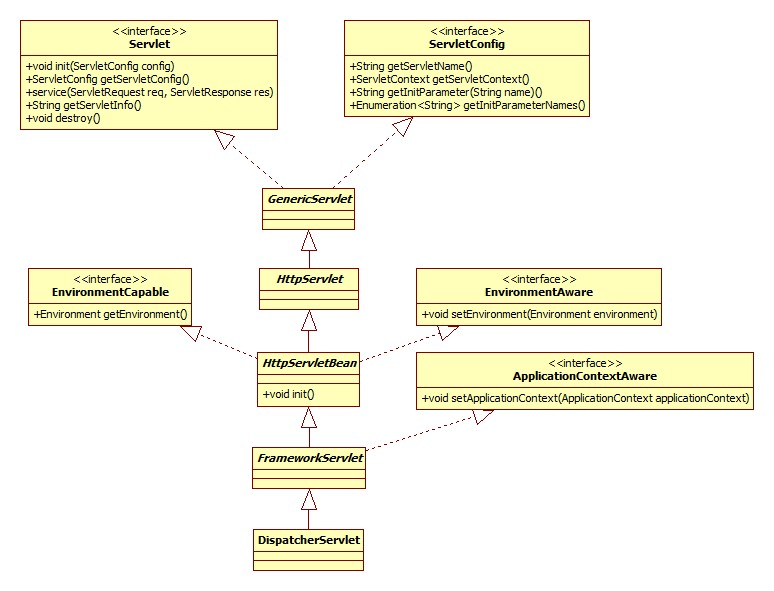
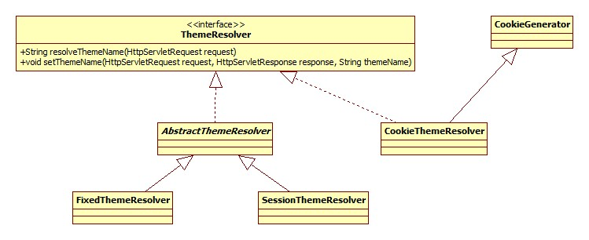
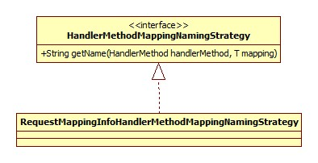
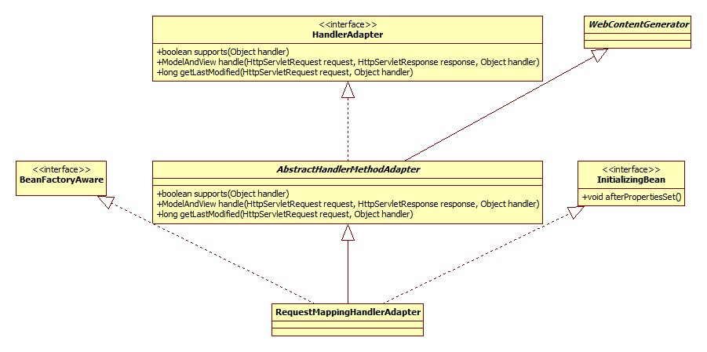
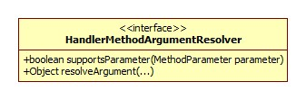
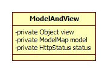
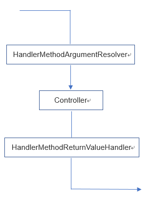
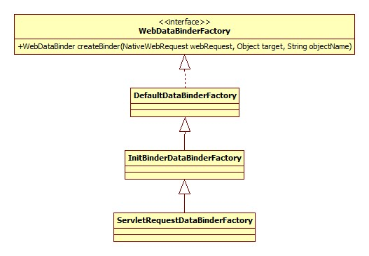

本文最后更新于：2023年9月7日 下午
初始化 spring-mvc的核心便是DispatcherServlet，所以初始化也是围绕其展开的。类图:

Servlet标准定义了init方法是其生命周期的初始化方法。
HttpServletBean.init:
1 2 3 4 5 6 7 8 9 10 11 12 13 14 15 @Override public final void init () throws ServletException {PropertyValues pvs = new ServletConfigPropertyValues (getServletConfig(), this .requiredProperties);BeanWrapper bw = PropertyAccessorFactory.forBeanPropertyAccess(this );ResourceLoader resourceLoader = new ServletContextResourceLoader (getServletContext());new ResourceEditor (resourceLoader, getEnvironment()));true );
主要逻辑一目了然。注意setPropertyValues方法会导致对DispatcherServlet相关setter方法的调用，所以当进行容器初始化时从init-param中读取的参数已被设置到DispatcherServlet的相关字段(Field)中 。
容器初始化 FrameworkServlet.initServletBean简略版源码:
1 2 3 4 5 6 @Override protected final void initServletBean () {this .webApplicationContext = initWebApplicationContext();
FrameworkServlet.initWebApplicationContext:
1 2 3 4 5 6 7 8 9 10 11 12 13 14 15 16 17 18 19 20 21 22 23 24 25 26 27 28 29 30 31 32 33 34 protected WebApplicationContext initWebApplicationContext () {WebApplicationContext rootContext = WebApplicationContext wac = null ;if (this .webApplicationContext != null ) {this .webApplicationContext;if (wac instanceof ConfigurableWebApplicationContext) {ConfigurableWebApplicationContext cwac = (ConfigurableWebApplicationContext) wac;if (!cwac.isActive()) {if (cwac.getParent() == null ) {if (wac == null ) {if (wac == null ) {if (!this .refreshEventReceived) {if (this .publishContext) {String attrName = getServletContextAttributeName();return wac;
下面分部分展开。
根容器查找 spring-mvc支持Spring容器与MVC容器共存，此时，Spring容器即根容器，mvc容器将根容器视为父容器。
Spring容器(根容器)以下列形式进行配置(web.xml):
1 2 3 <listener > <listener-class > org.springframework.web.context.ContextLoaderListener</listener-class > </listener >
根据Servlet规范，各组件的加载 顺序如下:
listener -> filter -> servlet
WebApplicationContextUtils.getWebApplicationContext:
1 2 3 4 String ROOT_WEB_APPLICATION_CONTEXT_ATTRIBUTE = WebApplicationContext.class.getName() + ".ROOT" ;public static WebApplicationContext getWebApplicationContext (ServletContext sc) {return getWebApplicationContext(sc, WebApplicationContext.ROOT_WEB_APPLICATION_CONTEXT_ATTRIBUTE);
两参数方法:
1 2 3 4 5 6 7 public static WebApplicationContext getWebApplicationContext (ServletContext sc, String attrName) {Object attr = sc.getAttribute(attrName);if (attr == null ) {return null ;return (WebApplicationContext) attr;
可以得出结论:
如果Spring根容器存在，那么它被保存在ServletContext中，其key为WebApplicationContext.class.getName() + ".ROOT"。
容器创建 FrameworkServlet.createWebApplicationContext:
1 2 3 4 5 6 7 8 9 10 11 12 13 protected WebApplicationContext createWebApplicationContext (ApplicationContext parent) {if (!ConfigurableWebApplicationContext.class.isAssignableFrom(contextClass)) {throw new ApplicationContextException ();ConfigurableWebApplicationContext wac = return wac;
通过对getContextClass方法的调用，Spring允许我们自定义容器的类型，即我们可以在web.xml中如下配置:
1 2 3 4 5 6 7 8 9 10 11 12 13 14 <servlet > <servlet-name > SpringMVC</servlet-name > <servlet-class > org.springframework.web.servlet.DispatcherServlet</servlet-class > <init-param > <param-name > contextConfigLocation</param-name > <param-value > classpath:spring-servlet.xml</param-value > </init-param > <init-param > <param-name > contextClass</param-name > <param-value > java.lang.Object</param-value > </init-param > </servlet >
configureAndRefreshWebApplicationContext核心源码:
1 2 3 4 protected void configureAndRefreshWebApplicationContext (ConfigurableWebApplicationContext wac) {
ApplicationContextInitializer ApplicationContextInitializer允许我们在Spring(mvc)容器初始化之前干点坏事，可以通过init-param传入:
1 2 3 4 <init-param > <param-name > contextInitializerClasses</param-name > <param-value > 坏事儿</param-value > </init-param >
applyInitializers方法正是要触发这些坏事儿。类图:
配置解析 “配置”指的便是spring-servlet.xml:
1 2 3 4 5 6 7 8 9 10 11 <context:component-scan base-package ="controller" /> <mvc:annotation-driven /> <mvc:default-servlet-handler /> <bean class ="org.springframework.web.servlet.view.UrlBasedViewResolver" > <property name ="viewClass" value ="org.springframework.web.servlet.view.JstlView" > </property > <property name ="prefix" value ="/WEB-INF/" > </property > <property name ="suffix" value =".jsp" > </property > </bean >
而解析的入口便在于对refresh方法的调用，此方法位于AbstractApplicationContext，这一点在spring-core时已经见过了，下面我们重点关注不同于spring-core的地方。
对于spring-mvc来说，其容器默认为XmlWebApplicationContext，部分类图:
XmlWebApplicationContext通过重写loadBeanDefinitions方法改变了bean加载行为，使其指向spring-servlet.xml。
spring-servlet.xml中不同于spring-core的地方便在于引入了mvc命名空间，正如spring-core中笔记中所说的那样，Spring用过jar包/META-INFO中的.handlers文件定义针对不同的命名空间所使用的解析器 。
mvc命名空间的解析器为MvcNamespaceHandler，部分源码:
1 2 3 4 5 6 7 8 @Override public void init () {"annotation-driven" , new AnnotationDrivenBeanDefinitionParser ());"default-servlet-handler" , new DefaultServletHandlerBeanDefinitionParser ());"interceptors" , new IanterceptorsBeanDefinitionParser ());"view-resolvers" , new ViewResolversBeanDefinitionParser ());
老样子，按部分展开。
注解驱动 其parse方法负责向Sprng容器注册一些必要的组件，整理如下图:
静态资源处理 即:
1 <mvc:default-servlet-handler />
DefaultServletHandlerBeanDefinitionParser.parse负责向容器注册以下三个组件:
DefaultServletHttpRequestHandler
SimpleUrlHandlerMapping
HttpRequestHandlerAdapter
拦截器 InterceptorsBeanDefinitionParser.parse方法负责将每一项mvc:interceptor配置解析为一个MappedInterceptor bean并注册到容器中 。
视图 有两种方式向Spring容器注册视图:
以前采用较土的方式:
1 2 3 4 5 6 <bean class ="org.springframework.web.servlet.view.UrlBasedViewResolver" > <property name ="viewClass" value ="org.springframework.web.servlet.view.JstlView" > </property > <property name ="prefix" value ="/WEB-INF/" > </property > <property name ="suffix" value =".jsp" > </property > </bean >
通过特定的标签:
1 2 3 <mvc:view-resolvers > <mvc:jsp view-class ="" /> </mvc:view-resolvers >
从这里可以推测出: 拦截器同样支持第一种方式，Spring在查找时应该会查询某一接口的子类。
ViewResolversBeanDefinitionParser.parse方法的作用便是将每一个视图解析为ViewResolver并注册到容器。
Scope/处理器注册 AbstractRefreshableWebApplicationContext.postProcessBeanFactory:
1 2 3 4 5 6 7 8 9 10 @Override protected void postProcessBeanFactory (ConfigurableListableBeanFactory beanFactory) {new ServletContextAwareProcessor (this .servletContext, this .servletConfig));this .servletContext);this .servletContext, this .servletConfig);
ServletContextAwareProcessor用以向实现了ServletContextAware的bean注册ServletContext。
registerWebApplicationScopes用以注册”request”, “session”, “globalSession”, “application”四种scope，scope是个什么东西以及如何自定义，在spring-core中已经进行过说明了。
registerEnvironmentBeans用以将servletContext、servletConfig以及各种启动参数注册到Spring容器中。
MVC初始化 入口位于DispatcherServlet的initStrategies方法(经由onRefresh调用):
1 2 3 4 5 6 7 8 9 10 11 protected void initStrategies (ApplicationContext context) {
显然，这里就是spring-mvc的核心了。
文件上传支持 initMultipartResolver核心源码:
1 2 3 4 5 6 7 8 private void initMultipartResolver (ApplicationContext context) {try {this .multipartResolver = context.getBean(MULTIPART_RESOLVER_BEAN_NAME, MultipartResolver.class);catch (NoSuchBeanDefinitionException ex) {this .multipartResolver = null ;
MultipartResolver用于开启Spring MVC文件上传功能，其类图:
也就是说，如果我们要使用文件上传功能，须在容器中注册一个MultipartResolver bean。当然，默认是没有的。
地区解析器 LocaleResolver接口定义了Spring MVC如何获取客户端(浏览器)的地区，initLocaleResolver方法在容器中寻找此bean，如果没有，注册AcceptHeaderLocaleResolver，即根据request的请求头Accept-Language 获取地区。
spring-mvc采用了属性文件的方式配置默认策略(即bean)，此文件位于spring-mvc的jar包的org.springframework.web.servlet下。
主题解析器 ThemeResolver接口配合Spring标签库使用可以通过动态决定使用的css以及图片的方式达到换肤的效果，其类图:

如果容器中不存在叫做themeResolver的bean，initThemeResolver方法将向容器中注册FixedThemeResolver，此bean只能提供一套默认的主题，名为theme。
HandlerMapping检查 initHandlerMappings方法用于确保容器中至少含有一个HandlerMapping对象 。从前面配置解析-注解驱动一节中可以看出，注解驱动导致已经注册了两个此对象。
如果没有开启注解驱动，那么将会使用默认的HandlerMapping，相关源码:
1 2 3 4 5 6 if (this .handlerMappings == null ) {this .handlerMappings = getDefaultStrategies(context, HandlerMapping.class);if (logger.isDebugEnabled()) {"No HandlerMappings found in servlet '" + getServletName() + "': using default" );
前面提到了，默认的策略由DispatcherServlet.properties决定，目前是BeanNameUrlHandlerMapping和DefaultAnnotationHandlerMapping 。
HandlerAdapter检查 套路和上面完全一样，默认使用HttpRequestHandlerAdapter、SimpleControllerHandlerAdapter和AnnotationMethodHandlerAdapter。
HandlerExceptionResolver检查 套路和上面完全一样，默认使用AnnotationMethodHandlerExceptionResolver、ResponseStatusExceptionResolver、DefaultHandlerExceptionResolver。
RequestToViewNameTranslator initRequestToViewNameTranslator方法回向容器中注册一个DefaultRequestToViewNameTranslator对象，此接口用以完成从HttpServletRequest到视图名的解析，其使用场景是给定的URL无法匹配任何控制器时 。
DefaultRequestToViewNameTranslator的转换例子:
http://localhost:8080/gamecast/display.html -> display(视图)
其类图:
ViewResolver检查 熟悉的套路，默认使用InternalResourceViewResolver。
FlashMapManager initFlashMapManager方法会向容器注册SessionFlashMapManager对象，类图:
此接口和FlashMap搭配使用，用于在请求重定向时保存/传递参数 。
HandlerMapping初始化 此接口用以根据请求的URL寻找合适的处理器。从前面配置解析一节可以看出，我们的容器中有三个HandlerMapping实现，下面以RequestMappingHandlerMapping位代表进行说明。
RequestMappingHandlerMapping 此实现根据@Controller和@RequestMapping注解完成解析。类图(忽略部分接口):
初始化的入口位于AbstractHandlerMethodMapping的afterPropertiesSet方法和AbstractHandlerMapping的initApplicationContext方法，afterPropertiesSet调用了initHandlerMethods:
1 2 3 4 5 6 7 8 9 10 11 12 13 14 15 16 17 18 protected void initHandlerMethods () {this .detectHandlerMethodsInAncestorContexts ?for (String beanName : beanNames) {if (!beanName.startsWith(SCOPED_TARGET_NAME_PREFIX)) {null ;if (beanType != null && isHandler(beanType)) {
detectHandlerMethods方法将反射遍历类中所有的public方法，如果方法上含有@RequestMapping注解，那么将方法上的路径与类上的基础路径(如果有)进行合并，之后将映射(匹配关系)注册到MappingRegistry中。
注意，类上的@RequestMapping注解只能作为基路径存在，也就是说，如果类里面没有任何的方法级@RequestMapping注解，那么类上的注解是没有意义的 。这一点可以从实验和源码上得到证实。
下面我们关注一下映射关系是如何保存(注册)的。
内部类AbstractHandlerMethodMapping.MappingRegistry是映射的载体，类图:
其register方法简略版源码:
1 2 3 4 5 6 7 8 9 10 11 12 13 14 15 16 17 18 19 public void register (T mapping, Object handler, Method method) {HandlerMethod handlerMethod = createHandlerMethod(handler, method);this .mappingLookup.put(mapping, handlerMethod);for (String url : directUrls) {this .urlLookup.add(url, mapping);String name = null ;if (getNamingStrategy() != null ) {CorsConfiguration corsConfig = initCorsConfiguration(handler, method, mapping);if (corsConfig != null ) {this .corsLookup.put(handlerMethod, corsConfig);this .registry.put(mapping, new MappingRegistration <T>(mapping, handlerMethod, directUrls, name));
mapping其实是一个RequestMappingInfo对象，可以将其看做是**@RequestMapping注解各种属性的一个封装**。最终由RequestMappingInfo.createRequestMappingInfo方法创建，源码:
1 2 3 4 5 6 7 8 9 10 11 12 13 14 protected RequestMappingInfo createRequestMappingInfo ( RequestMapping requestMapping, RequestCondition<?> customCondition) {return RequestMappingInfothis .config)
这就很明显了，具体每种属性什么意义可以参考@RequestMapping源码。
register方法中urlLookup其实就是将paths属性中的每个path都与处理器做映射。
getNamingStrategy方法得到的是一个HandlerMethodMappingNamingStrategy接口的实例，此接口用以根据HandlerMethod得到一个名字，类图:

比如对于我们的控制器,SimpleController.echo方法，最终得到的名字将是SC#echo。
跨域请求 spring-mvc自4.2开启加入了跨域请求Cors的支持，主要有两种配置方式:
xml:
1 2 3 <mvc:cors > <mvc:mapping path ="" /> </mvc:cors >
@CrossOrigin注解。
Cors的原理可以参考:
探讨跨域请求资源的几种方式
而initCorsConfiguration方法的作用便是将@CrossOrigin注解的各种属性封装在CorsConfiguration中。
拦截器初始化 AbstractHandlerMapping.initApplicationContext:
1 2 3 4 @Override protected void initApplicationContext () throws BeansException {this .adaptedInterceptors);
作用就是从容器中获取所有MappedInterceptor bean并放到adaptedInterceptors中，前面提到过了，我们使用mvc:interceptor定义的拦截器其实就是MappedInterceptor对象。类图:
HandlerAdapter初始化 同样，我们以RequestMappingHandlerAdapter为例进行说明，类图:

显然，入口在afterPropertiesSet方法:
1 2 3 4 5 6 7 8 9 10 11 12 13 14 15 16 17 18 19 20 @Override public void afterPropertiesSet () {if (this .argumentResolvers == null ) {this .argumentResolvers = new HandlerMethodArgumentResolverComposite ()if (this .initBinderArgumentResolvers == null ) {this .initBinderArgumentResolvers = new HandlerMethodArgumentResolverComposite ()if (this .returnValueHandlers == null ) {this .returnValueHandlers = new HandlerMethodReturnValueHandlerComposite ()
@ControllerAdvice initControllerAdviceCache方法用以解析并存储标注了@ControllerAdvice的bean，这东西是干什么的参考：
Spring3.2新注解@ControllerAdvice
参数解析器 HandlerMethodArgumentResolver即参数解析器，负责从request中解析、得到Controller方法所需的参数。afterPropertiesSet方法设置了一组默认的解析器。具体是哪些参考getDefaultArgumentResolvers方法。类图:

@InitBinder支持 此注解定义的其实是自定义类型转换器。使用方法参考:
springMVC @initBinder 使用
getDefaultInitBinderArgumentResolvers返回了一组默认使用的转换器，不过其实这里的转换器和上面的参数解析器其实是一个类型的，这里留个坑。
返回结果解析器 HandlerMethodReturnValueHandler接口用以处理方法调用(Controller方法)的返回值，类图:
getDefaultReturnValueHandlers方法便返回了一坨这东西。
请求响应 我们先来看一下入口在哪。众所周知，Servlet标准定义了所有请求先由service方法处理，如果是get或post方法，那么再交由doGet或是doPost方法处理。
FrameworkServlet覆盖了service方法:
1 2 3 4 5 6 7 8 9 @Override protected void service (HttpServletRequest request, HttpServletResponse response) {HttpMethod httpMethod = HttpMethod.resolve(request.getMethod());if (HttpMethod.PATCH == httpMethod || httpMethod == null ) {else {super .service(request, response);
Spring要覆盖此方法的目的在于拦截PATCH请求，PATCH请求与PUT类似，不同在于PATCH是局部更新，而后者是全部更新。可以参考:
PATCH和PUT方法的区别？
FrameworkServlet同样也覆盖了doGet和doPost方法，两者只是调用processRequest方法。
请求上下文 Spring MVC会在请求分发之前进行上下文的准备工作，含两部分:
将地区(Locale)和请求属性以ThreadLocal的方法与当前线程进行关联，分别可以通过LocaleContextHolder和RequestContextHolder进行获取。
将WebApplicationContext、FlashMap等组件放入到Request属性中。
请求分发 DispatcherServlet.doDispatch简略版源码:
1 2 3 4 5 6 7 8 protected void doDispatch (HttpServletRequest request, HttpServletResponse response) {HandlerExecutionChain mappedHandler = getHandler(processedRequest);HandlerAdapter ha = getHandlerAdapter(mappedHandler.getHandler());
处理器查找 即为请求寻找合适的Controller的过程。DispatcherServlet.getHandler:
1 2 3 4 5 6 7 8 9 protected HandlerExecutionChain getHandler (HttpServletRequest request) {for (HandlerMapping hm : this .handlerMappings) {HandlerExecutionChain handler = hm.getHandler(request);if (handler != null ) {return handler;return null ;
从这里可以看出，寻找处理器实际上委托给HandlerMapping实现，寻找的过程便是遍历所有的HandlerMapping进行查找，一旦找到，那么不再继续进行遍历 。也就是说HandlerMapping之间有优先级的概念，而根据AnnotationDrivenBeanDefinitionParser的注释，RequestMappingHandlerMapping其实有最高的优先级。
AbstractHandlerMapping.getHandler:
1 2 3 4 5 6 7 8 9 10 11 12 13 14 @Override public final HandlerExecutionChain getHandler (HttpServletRequest request) throws Exception {Object handler = getHandlerInternal(request);HandlerExecutionChain executionChain = getHandlerExecutionChain(handler, request);if (CorsUtils.isCorsRequest(request)) {CorsConfiguration globalConfig = this .corsConfigSource.getCorsConfiguration(request);CorsConfiguration handlerConfig = getCorsConfiguration(handler, request);CorsConfiguration config = (globalConfig != null ? return executionChain;
getHandlerInternal方法便是根据url进行查找的过程，可以参见MVC初始化-HandlerMapping初始化一节。下面重点是执行链的生成。
getHandlerExecutionChain方法的原理就是从adaptedInterceptors中获得所有可以适配当前请求URL的MappedInterceptor并将其添加到HandlerExecutionChain的拦截器列表中。拦截器的顺序其实就是我们定义/注册的顺序。
从getCorsHandlerExecutionChain的源码中可以看出，对于跨域请求其实是向调用链插入了一个CorsInterceptor。
适配器查找 DispatcherServlet.getHandlerAdapter:
1 2 3 4 5 6 7 protected HandlerAdapter getHandlerAdapter (Object handler) {for (HandlerAdapter ha : this .handlerAdapters) {if (ha.supports(handler)) {return ha;
从前面配置解析-注解驱动可以看出，第一个适配器是RequestMappingHandlerAdapter，而其support方法直接返回true，这就导致了使用的适配器总是这一个。
请求处理 RequestMappingHandlerAdapter.handleInternal:
1 2 3 4 5 6 7 8 9 10 11 12 13 14 15 16 17 18 19 20 21 22 23 24 25 26 27 28 29 30 @Override protected ModelAndView handleInternal (HttpServletRequest request, HttpServletResponse response, HandlerMethod handlerMethod) {if (this .synchronizeOnSession) {HttpSession session = request.getSession(false );if (session != null ) {Object mutex = WebUtils.getSessionMutex(session);synchronized (mutex) {else {else {if (!response.containsHeader(HEADER_CACHE_CONTROL)) {if (getSessionAttributesHandler(handlerMethod).hasSessionAttributes()) {this .cacheSecondsForSessionAttributeHandlers);else {return mav;
Session同步 可以看出，如果开启了synchronizeOnSession，那么同一个session的请求将会串行执行 ，这一选项默认是关闭的，当然我们可以通过注入的方式进行改变。
参数解析 策略模式 正如前面HandlerAdapter初始化-参数解析器一节提到的，HandlerAdapter内部含有一组解析器负责对各类型的参数进行解析。下面我们就常用的自定义参数和Model为例进行说明。
自定义参数 解析由RequestParamMethodArgumentResolver完成。
supportsParameter方法决定了一个解析器可以解析的参数类型，该解析器支持@RequestParam标准的参数或是简单类型 的参数，具体参见其注释。为什么此解析器可以同时解析@RequestParam注解和普通参数呢?玄机在于RequestMappingHandlerAdapter方法在初始化参数解析器时其实初始化了两个RequestMappingHandlerAdapter对象 ，getDefaultArgumentResolvers方法相关源码:
1 2 3 4 5 private List<HandlerMethodArgumentResolver> getDefaultArgumentResolvers () {new RequestPartMethodArgumentResolver (getMessageConverters(), this .requestResponseBodyAdvice));new RequestParamMethodArgumentResolver (getBeanFactory(), true ));
useDefaultResolution参数用于启动对常规类型参数的解析，这里的常规类型指的又是什么呢?
实际上由BeanUtils.isSimpleProperty方法决定:
1 2 3 4 5 6 7 8 9 10 11 12 13 public static boolean isSimpleProperty (Class<?> clazz) {"Class must not be null" );return isSimpleValueType(clazz) || (clazz.isArray() && isSimpleValueType(clazz.getComponentType()));public static boolean isSimpleValueType (Class<?> clazz) {return (ClassUtils.isPrimitiveOrWrapper(clazz) || clazz.isEnum() ||
忽略复杂的调用关系，最核心的实现位于resolveName方法，部分源码:
1 2 3 4 5 6 7 8 9 10 @Override protected Object resolveName (String name, MethodParameter parameter, NativeWebRequest request) {if (arg == null ) {if (paramValues != null ) {1 ? paramValues[0 ] : paramValues);return arg;
name就是方法的参数名，可以看出，参数解析就是根据参数名去request查找对应属性的过程 ，在这里参数类型并没有起什么作用。
参数名是从哪里来的 方法名获取的入口位于RequestParamMethodArgumentResolver的resolveArgument方法:
1 2 3 4 5 @Override public final Object resolveArgument (MethodParameter parameter, ModelAndViewContainer mavContainer, NativeWebRequest webRequest, WebDataBinderFactory binderFactory) throws Exception {NamedValueInfo namedValueInfo = getNamedValueInfo(parameter);
getNamedValueInfo方法最终完成对MethodParameter的getParameterName方法的调用:
1 2 3 4 5 6 7 8 9 10 11 12 public String getParameterName () {ParameterNameDiscoverer discoverer = this .parameterNameDiscoverer;if (discoverer != null ) {this .method != null ?this .method) : discoverer.getParameterNames(this .constructor));if (parameterNames != null ) {this .parameterName = parameterNames[this .parameterIndex];this .parameterNameDiscoverer = null ;return this .parameterName;
显然，参数名的获取由接口ParameterNameDiscoverer完成:
默认采用DefaultParameterNameDiscoverer，但此类其实相当于StandardReflectionParameterNameDiscoverer和LocalVariableTableParameterNameDiscoverer的组合，且前者先于后者进行解析。
StandardReflectionParameterNameDiscoverer.getParameterNames:
1 2 3 4 5 6 7 8 9 10 11 12 13 @Override public String[] getParameterNames(Method method) {new String [parameters.length];for (int i = 0 ; i < parameters.length; i++) {Parameter param = parameters[i];if (!param.isNamePresent()) {return null ;return parameterNames;
此类被注解UsesJava8标注，其原理就是利用的jdk8的-parameters编译参数，只有在加上此选项的情况下才能用反射的方法获得真实的参数名，所以一般情况下StandardReflectionParameterNameDiscoverer是无法成功获取参数名的。
LocalVariableTableParameterNameDiscoverer利用了ASM直接访问class文件中的本地变量表来得到变量名，下面是使用javap -verbose命令得到的本地变量表示例:
但是默认情况下javac compiler是不生成本地变量表这种调试信息的，需要加-g参数才可以，那为什么在我们的测试Controller中却可以获得呢，玄机就在于idea的下列设置:
取消这项设置的勾选再次运行程序便出问题了:
Model 解析由ModelMethodProcessor完成。
supportsParameter方法很简单:
1 2 3 4 @Override public boolean supportsParameter (MethodParameter parameter) {return Model.class.isAssignableFrom(parameter.getParameterType());
很直白了。
resolveArgument：
1 2 3 4 5 @Override public Object resolveArgument (MethodParameter parameter, ModelAndViewContainer mavContainer, NativeWebRequest webRequest, WebDataBinderFactory binderFactory) throws Exception {return mavContainer.getModel();
忽略各种调用关系，Model其实是一个BindingAwareModelMap对象，且每次请求(需要注入Model的前提下)都有一个新的该对象生成 。类图:
总结
我们可以通过实现HandlerMethodArgumentResolver接口并将其注册容器的方式实现自定义参数类型的解析。
为了防止出现参数名获取不到的问题，应优先使用@RequestParam注解直接声明需要的参数名称。
返回值解析 套路和上面是一样的，通常情况，我们返回的其实是view名，负责处理的是ViewNameMethodReturnValueHandler，
supportsReturnType方法:
1 2 3 4 5 @Override public boolean supportsReturnType (MethodParameter returnType) {return (void .class == paramType || CharSequence.class.isAssignableFrom(paramType));
handleReturnValue:
1 2 3 4 5 6 7 8 9 10 11 12 @Override public void handleReturnValue (Object returnValue, MethodParameter returnType, ModelAndViewContainer mavContainer, NativeWebRequest webRequest) {if (returnValue instanceof CharSequence) {String viewName = returnValue.toString();if (isRedirectViewName(viewName)) {true );
可见这里并没有进行实际的处理，只是解析得到了最终的视图名称。
视图渲染 由DispatcherServlet的processDispatchResult方法完成，源码:
1 2 3 4 5 6 7 8 9 10 11 12 13 14 15 16 17 18 19 20 21 private void processDispatchResult (HttpServletRequest request, HttpServletResponse response, HandlerExecutionChain mappedHandler, ModelAndView mv, Exception exception) {boolean errorView = false ;if (exception != null ) {if (exception instanceof ModelAndViewDefiningException) {else {Object handler = (mappedHandler != null ? mappedHandler.getHandler() : null );null );if (mv != null && !mv.wasCleared()) {if (errorView) {
可以看出，处理根据是否抛出异常分为了两种情况 。
如果抛出了异常，那么processHandlerException方法将会遍历所有的HandlerExceptionResolver实例，默认有哪些参考MVC初始化-HandlerExceptionResolver检查一节。默认的处理器用于改变响应状态码、调用标注了@ExceptionHandler的bean进行处理，如果没有@ExceptionHandler的bean或是不能处理此类异常，那么就会导致ModelAndView始终为null，最终Spring MVC将异常向上抛给Tomcat，然后Tomcat就会把堆栈打印出来。
如果我们想将其定向到指定的错误页面，可以这样配置:
1 2 3 <bean class ="org.springframework.web.servlet.handler.SimpleMappingExceptionResolver" > <property name ="defaultErrorView" value ="error" > </property > </bean >
此处理器会返回一个非空的ModelAndView。
ModelAndView 回过头来看一下这到底是个什么东西。类图:

很直白。
怎么生成的。RequestMappingHandlerAdapter.getModelAndView相关源码:
1 2 ModelMap model = mavContainer.getModel();ModelAndView mav = new ModelAndView (mavContainer.getViewName(), model, mavContainer.getStatus());
渲染 DispatcherServlet.render简略版源码:
1 2 3 4 5 6 7 8 9 10 11 12 13 14 15 16 17 protected void render (ModelAndView mv, HttpServletRequest request, HttpServletResponse response) {Locale locale = this .localeResolver.resolveLocale(request);if (mv.isReference()) {else {if (mv.getStatus() != null ) {
resolveViewName方法将会遍历所有的ViewResolver bean，只要有一个解析的结果(View)不为空，即停止遍历。根据MVC初始化-ViewResolver检查一节和我们的配置文件可知，容器中有两个ViewResolver ，分别是: InternalResourceViewResolver和UrlBasedViewResolver。
ViewResolver 类图(忽略实现类):
resolveViewName方法的源码不再贴出，其实只做了一件事: 用反射创建并初始化我们指定的View，根据我们的配置，就是JstlView。
View 类图:
渲染的核心逻辑位于InternalResourceView.renderMergedOutputModel，简略版源码:
1 2 3 4 5 6 7 8 9 10 11 12 13 14 15 16 17 18 @Override protected void renderMergedOutputModel ( Map<String, Object> model, HttpServletRequest request, HttpServletResponse response) {String dispatcherPath = prepareForRendering(request, response);RequestDispatcher rd = getRequestDispatcher(request, dispatcherPath);if (useInclude(request, response)) {else {
可以看出，对jsp来说，所谓的渲染其实就是将Model中的属性设置到Request，再利用原生Servlet RequestDispatcher API进行转发的过程 。
拾遗 @ResponseBody 通常我们可以在Controller或方法上标注@ResponseBody注解以表示需要将对象转为JSON并返回给前端，那么Spring MVC是如何自动完成这一过程的呢?
从前面初始化-容器初始化-容器创建-配置解析一节可以看出，Spring MVC采用org.springframework.web.servlet.config.AnnotationDrivenBeanDefinitionParser进行配置的解析，核心的parse方法中完成了对HttpMessageConverter的初始化。
HttpMessageConverter Spring的HttpMessageConverter接口负责HTTP请求-Java对象与Java对象-响应之间的转换。我们以Spring默认使用的Jackson转换器为例，类图:
HttpMessageConverter实现的初始化由AnnotationDrivenBeanDefinitionParser的getMessageConverters方法完成，HttpMessageConverter的来源分为自定义和默认。
示例配置:
1 2 3 4 5 <mvc:annotation-driven > <mvc:message-converters register-defaults ="true" > <bean class ="test.Converter" /> </mvc:message-converters > </mvc:annotation-driven >
自定义 Spring允许我们通过XML配置文件的message-converters元素来进行自定义。
默认 当检测到没有配置message-converters元素或者register-defaults=”true”时Spring便会注册默认转换器 。这其中便包括MappingJacksonHttpMessageConverter，相关源码:
1 2 3 4 else if (jacksonPresent) {
jacksonPresent声明:
1 2 3 private static final boolean jacksonPresent = "org.codehaus.jackson.map.ObjectMapper" , AnnotationDrivenBeanDefinitionParser.class.getClassLoader()) &&"org.codehaus.jackson.JsonGenerator" , AnnotationDrivenBeanDefinitionParser.class.getClassLoader());
转换 入口位于ServletInvocableHandlerMethod的invokeAndHandle方法对于响应的处理:
1 this .returnValueHandlers.handleReturnValue(returnValue, getReturnValueType(returnValue), mavContainer, webRequest);
returnValueHandlers其实就是RequestMappingHandlerAdapter内部的returnValueHandlers，后者由RequestMappingHandlerAdapter的afterPropertiesSet方法初始化，关键在于:
1 handlers.add(new RequestResponseBodyMethodProcessor (getMessageConverters(), this .contentNegotiationManager));
对象到JSON的转换正是由RequestResponseBodyMethodProcessor完成，ServletInvocableHandlerMethod通过supportsReturnType方法决定HandlerMethodReturnValueHandler是否可以处理当前返回类型或返回方法，RequestResponseBodyMethodProcessor的实现:
1 2 3 4 5 @Override public boolean supportsReturnType (MethodParameter returnType) {return ((AnnotationUtils.findAnnotation(returnType.getContainingClass(), ResponseBody.class) != null ) ||null ));
核心的handleReturnValue方法:
1 2 3 4 5 6 7 8 @Override public void handleReturnValue (Object returnValue, MethodParameter returnType, ModelAndViewContainer mavContainer, NativeWebRequest webRequest) {true );if (returnValue != null ) {
这里其实是通过HttpMessageConverter的canRead或canWrite方法来判断给定的转换器是否合适，canWrite方法实现:
1 2 3 4 @Override public boolean canWrite (Class<?> clazz, MediaType mediaType) {return (this .objectMapper.canSerialize(clazz) && canWrite(mediaType));
这里剩下的便是Jackson的事情了，注意MappingJacksonHttpMessageConverter中的objectMapper被所有的线程所共享，因为其是线程安全的，但是这样是否有性能问题?
参数解析 & 结果转换 Spring MVC中参数到各种类型的转换由HandlerMethodArgumentResolver接口完成，而Controller返回值到真正的响应的转换由HandlerMethodReturnValueHandler接口完成。两者分别负责Spring MVC中数据的输入与输出，可用下图表示:

HandlerMethodArgumentResolver接口及其主要实现类如下图:
HandlerMethodReturnValueHandler接口以及主要实现类如下:
其实有很多类同时实现了两个接口，比如RequestResponseBodyMethodProcessor，这样的类一般以Processor结尾。
两种转换器的初始化由HandlerAdapter完成，这也很好的体现了HandlerAdapter接口的功能。以喜闻乐见的RequestMappingHandlerAdapter为例，其初始化的HandlerMethodReturnValueHandler列表如下:
ModelAndViewMethodReturnValueHandler
ModelMethodProcessor
HttpEntityMethodProcessor
HttpHeadersReturnValueHandler
CallableMethodReturnValueHandler
DeferredResultMethodReturnValueHandler
AsyncTaskMethodReturnValueHandler
ListenableFutureReturnValueHandler
ModelAttributeMethodProcessor
RequestResponseBodyMethodProcessor
ViewNameMethodReturnValueHandler
MapMethodProcessor
ModelAndViewResolverMethodReturnValueHandler
从中也可以推测出我们可以把哪些类型的值(对象)直接”丢给”Spring。
对于HandlerMethodArgumentResolver和HandlerMethodReturnValueHandler来说，HttpMessageConverter像是两者手中用来实现功能的武器。
“纯”对象参数接收 假设有如下这样的Controller:
1 2 3 4 5 @RequestMapping("/echoAgain") public String echo (SimpleModel simpleModel, Model model) {"echo" , "hello " + simpleModel.getName() + ", your age is " + simpleModel.getAge() + "." );return "echo" ;
经过测试可以发现，SimpleModel参数既可以接收get请求，也可以接收post请求。那么在这种情况下请求参数是被哪个参数解析器解析的呢，debug发现: ServletModelAttributeMethodProcessor：
核心的supportsParameter方法由父类ModelAttributeMethodProcessor实现:
1 2 3 4 5 @Override public boolean supportsParameter (MethodParameter parameter) {return (parameter.hasParameterAnnotation(ModelAttribute.class) ||this .annotationNotRequired && !BeanUtils.isSimpleProperty(parameter.getParameterType())));
可以看出，这里支持带有ModelAttribute注解或者是非基本类型的参数解析，同时annotationNotRequired必须设为false，即ModelAttribute注解不必存在，这里是在ServletModelAttributeMethodProcessor的构造器中进行控制的，
1 resolvers.add(new ServletModelAttributeMethodProcessor (false ));
此类的作用是对@ModelAttribute注解标注的参数进行解析，假设我们将Controller方法改写成:
1 2 3 4 5 6 @RequestMapping("/echoAgain") public String echo (@ModelAttribute SimpleModel simpleModel, Model model) {"echo" , "hello " + simpleModel.getName() + ", your age is " + simpleModel.getAge() + "." );"simpleModel" ));return "echo" ;
首先，Spring会首先反射生成一个SimpleModel对象，之后将从request中获取的参数尝试设置到SimpleModel对象中去，最后将此对象放置到Model中(本质上就是一个Map)，key就是simpleModel.下面我们来看一下具体的解析过程，整个过程可以分为
参数对象构造 因为SimpleModel是一个对象类型，所以要想将参数注入到其中，第一步必然是先创建一个对象，创建的入口位于ModelAttributeMethodProcessor的resolveArgument方法，相关源码:
1 2 3 4 String name = ModelFactory.getNameForParameter(parameter);Object attribute = (mavContainer.containsAttribute(name) ? mavContainer.getModel().get(name) :
ModelAndViewContainer是个什么东西呢，从名字就可以看出就，它是Spring MVC里两个重要概念Model和View的组合体，用来记录在请求响应过程中Model和View的变化，在这里可以简单理解为去Model中检查有没有叫simpleModel的属性已经存在。
参数绑定 这里使用到了DataBinder接口，按照注释的说明，此接口用以向执行的对象中设置属性值 ，就是这么简单，其继承体系如下图:
WebDataBinderFactory接口用以创建WebDataBinder对象，其继承体系如下图:

默认使用的是ServletRequestDataBinderFactory，创建了一个ExtendedServletRequestDataBinder对象:
1 2 3 4 @Override protected ServletRequestDataBinder createBinderInstance (Object target, String objectName, NativeWebRequest request) {return new ExtendedServletRequestDataBinder (target, objectName);
参数绑定的入口位于ModelAttributeMethodProcessor.resolveArgument方法，相关源码:
1 2 3 if (!mavContainer.isBindingDisabled(name)) {
接下来由ServletRequestDataBinder的bind方法完成，核心源码:
1 2 3 4 public void bind (ServletRequest request) {MutablePropertyValues mpvs = new ServletRequestParameterPropertyValues (request);
在ServletRequestParameterPropertyValues构造器中获取了Request中所有的属性对。doBind方法便是调用前面初始化的目标对象的setter方法进行参数设置的过程，不再展开。
参数校验 将我们的Controller方法改写为下面这种形式便可以启动Spring MVC的参数校验:
1 2 3 4 5 6 @RequestMapping("/echoAgain") public String echo (@Validated SimpleModel simpleModel, Model model) {"echo" , "hello " + simpleModel.getName() + ", your age is " + simpleModel.getAge() + "." );"simpleModel" ));return "echo" ;
在这里@Validated注解可以用@Valid(javax)替换，前者是Spring对java校验标准的扩充，增加了校验组的支持。
当参数校验绑定之后，Spring MVC会尝试对参数进行校验，如果我们设置了校验注解。ModelAttributeMethodProcessor.resolveArgument方法相关源码:
1 2 3 4 5 6 7 8 9 10 11 12 13 14 validateIfApplicable(binder, parameter);protected void validateIfApplicable (WebDataBinder binder, MethodParameter methodParam) {for (Annotation ann : annotations) {Validated validatedAnn = AnnotationUtils.getAnnotation(ann, Validated.class);if (validatedAnn != null || ann.annotationType().getSimpleName().startsWith("Valid" )) {Object hints = (validatedAnn != null ? validatedAnn.value() : AnnotationUtils.getValue(ann));instanceof Object[] ? (Object[]) hints : new Object [] {hints});break ;
DataBinder.validate:
1 2 3 4 5 6 7 8 9 public void validate (Object... validationHints) {for (Validator validator : getValidators()) {if (!ObjectUtils.isEmpty(validationHints) && validator instanceof SmartValidator) {else if (validator != null ) {
可见，具体的校验交给了org.springframework.validation.Validator实现，类图:
getValidators方法获取的实际上是DataBinder内部的validators字段:
1 private final List<Validator> validators = new ArrayList <Validator>();
根据这里的校验器的来源可以分为以下两种情况。
JSR校验 需要引入hibernate-validator到classpath中，回顾最前面配置解析部分，配置:
1 <mvc:annotation-driven />
会利用AnnotationDrivenBeanDefinitionParser进行相关的解析、初始化工作，正是在其parse方法完成了对JSR校验的支持。相关源码:
1 2 3 4 5 6 7 8 9 10 11 12 13 14 15 16 17 18 19 20 21 @Override public BeanDefinition parse (Element element, ParserContext parserContext) {RuntimeBeanReference validator = getValidator(element, source, parserContext);private RuntimeBeanReference getValidator (Element element, Object source, ParserContext parserContext) {if (element.hasAttribute("validator" )) {return new RuntimeBeanReference (element.getAttribute("validator" ));else if (javaxValidationPresent) {RootBeanDefinition validatorDef = new RootBeanDefinition ("org.springframework.validation.beanvalidation.OptionalValidatorFactoryBean" );String validatorName = parserContext.getReaderContext().registerWithGeneratedName(validatorDef);new BeanComponentDefinition (validatorDef, validatorName));return new RuntimeBeanReference (validatorName);else {return null ;
javaxValidationPresent的定义:
1 2 private static final boolean javaxValidationPresent = "javax.validation.Validator" , AnnotationDrivenBeanDefinitionParser.class.getClassLoader());
实现了InitializingBean接口，所以afterPropertiesSet方法是其初始化的入口，具体的校验过程不再展开。
自定义校验器 我们可以实现Spring提供的Validator接口，然后在Controller里边这样设置我们要是用的校验器:
1 2 3 4 5 @InitBinder public void initBinder (DataBinder dataBinder) {new SimpleModelValidator ());
我们的Controller方法依然可以如此定义:
1 2 3 4 @RequestMapping("/echoAgain") public String echo (@Validated SimpleModel simpleModel, Model model) {return "echo" ;
如果有错误，会直接返回400.
一个有意思的问题 如果我们把Controller方法这样定义会怎样?
1 2 @RequestMapping(value = "/echoAgain", method = RequestMethod.POST) public String echo (@Validated @RequestBody SimpleModel simpleModel, Model model) {}
答案是@RequestBody注解先于@Validated注解起作用，这样既可以利用@RequestBody注解向Controller传递json串，同时又能够达到校验的目的。从源码的角度来说，这在很大程度上是一个顺序的问题:
1 2 resolvers.add(new ServletModelAttributeMethodProcessor (false ));new RequestResponseBodyMethodProcessor (getMessageConverters(), this .requestResponseBodyAdvice));
虽然ServletModelAttributeMethodProcessor位于RequestResponseBodyMethodProcessor之前，但构造器参数为false说明了此解析器必须要求参数被@ModelAttribute注解标注，其实在最后还有一个不需要注解的解析器被添加:
1 2 new ServletModelAttributeMethodProcessor (true ));
至此，真相大白。
References